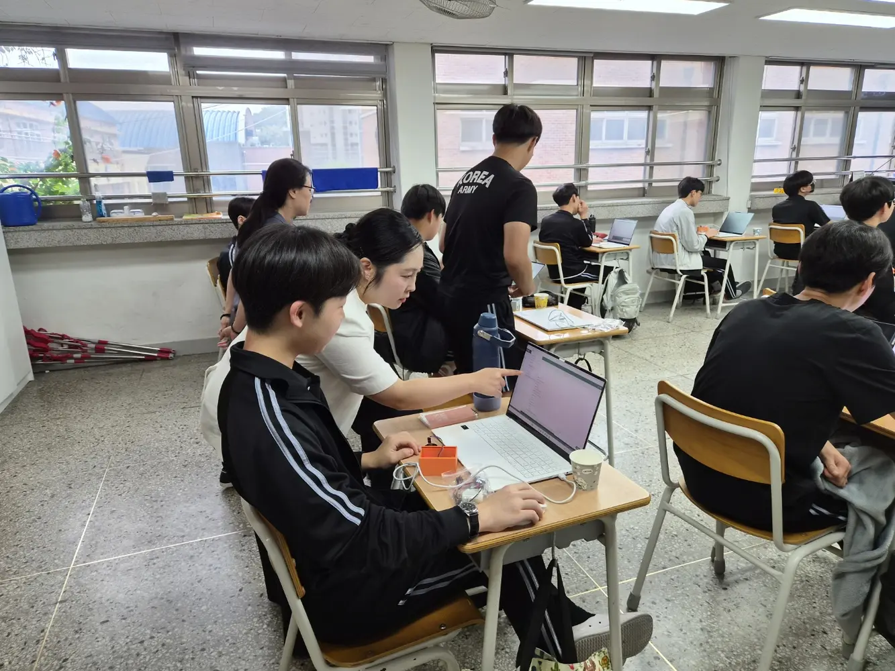
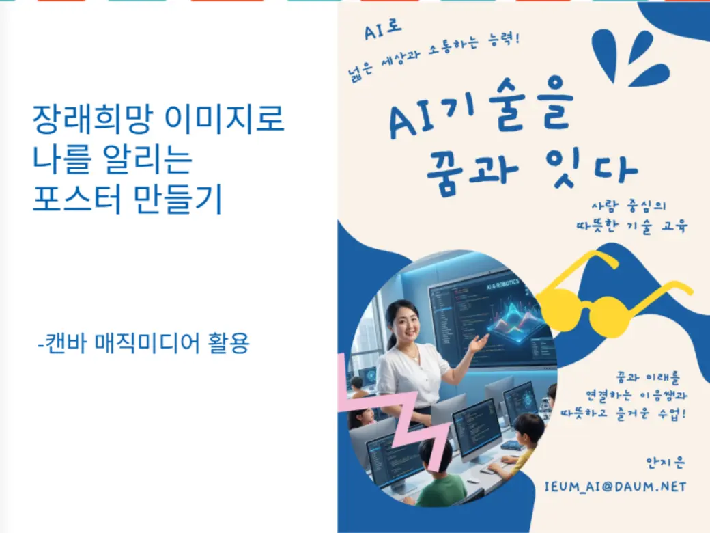
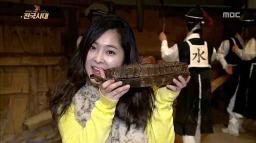
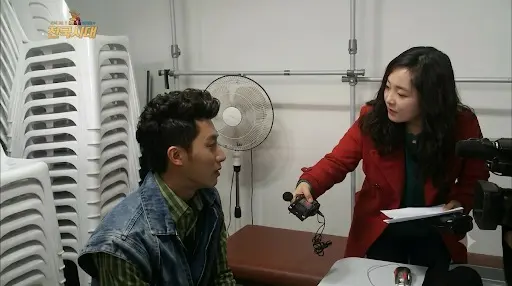

교육 특강
스마트농업 미니어처 공간설계
세일고등학교 · 보조강사
프로젝트 실습 과정에서 학생별 진행 상황을 살피고 디지털 도구 활용을 개별 지도했습니다.
01
어려운 기술을 친숙한 언어와 경험으로 바꿉니다.
저는 말로 사람을 연결해 온 경험을 바탕으로, 이제는 사람과 디지털을 연결합니다.
초등학교 방과후교실과 문화센터에서 어린이 스피치 강사로 활동하며 학습자의 수준과 반응에 맞춰 설명하고 참여를 이끌었습니다. 라디오 리포터로서는 어린아이부터 어르신까지 다양한 사람을 만나 복잡한 정보를 정확하고 쉽게 전달했습니다.
현재 AI 융합지도전문가 양성과정을 통해 생성형 AI, 엔트리, 파이썬, AI 윤리를 배우며 질문 중심·학생 참여형 수업을 설계하고 있습니다.
02
교육과 방송, 두 현장에서 쌓은
기획력과 전달력
세일고등학교 · 보조강사
프로젝트 실습 과정에서 학생별 진행 상황을 살피고 디지털 도구 활용을 개별 지도했습니다.
군서중학교 · 보조강사
센서와 코딩 실습 과정에서 학생들이 원리를 이해하고 완성할 수 있도록 개별 지도했습니다.
전남 동부권 초등학교 방과후교실 · 문화센터
아나운서, 발표, 자기표현 수업과 원고 작성 교육을 운영하며 아이들의 자신감과 표현력을 키웠습니다.
KBS순천 · 여수MBC
현장 취재와 인터뷰, 원고 구성·편집, 방송 콘텐츠 기획 및 전달을 담당했습니다.
03
현장에서 학습자와 만나고
이야기를 연결해 온 기록




04
도구보다 학습자를 먼저 생각하는 수업
학습자의 연령과 디지털 경험을 빠르게 파악하고, 어려운 개념을 익숙한 사례와 쉬운 언어로 설명합니다.
학습 목표에 맞는 질문, 활동, 실습을 연결해 수업계획서와 교수학습지도안을 구성합니다.
생성형 AI, 엔트리, 파이썬, CoSpaces 등 다양한 도구를 교육 목적에 맞게 활용합니다.
기능 활용과 함께 저작권, 개인정보, 편향 등 AI 윤리와 책임 있는 디지털 시민의식을 안내합니다.
TOOLS & TOPICS
05
시흥여성인력개발센터 · 수료 예정
생성형 AI, 엔트리, 파이썬, Pygame, AI 윤리, 융합 수업 설계 및 강의 시연시흥시 · 88시간 수료
06
시흥시 · 시흥여성새로일하기지원본부
한국방과후교육진흥원
한겨레웅변문화교류협회